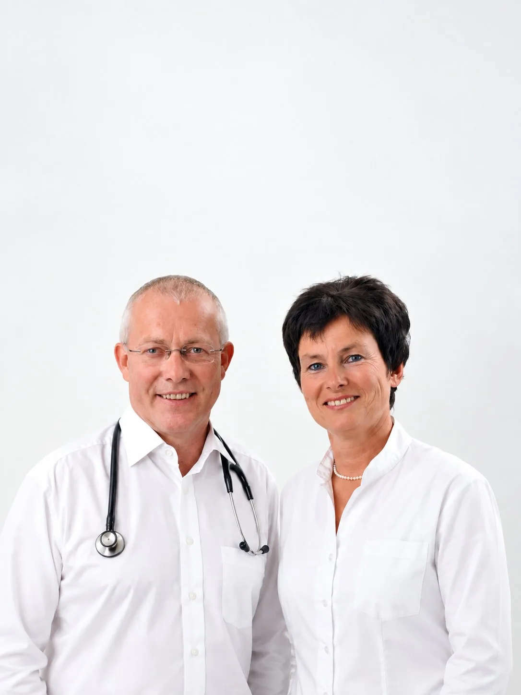

Die Gründung
Eröffnung der Hausarztpraxis in Düsseldorf-Oberkassel. Dieselben Räume, in denen wir bis heute arbeiten.
Hausärztliche Gemeinschaftspraxis · Oberkassel
Was als Hausarztpraxis begann, ist heute in zweiter Generation eine feste Anlaufstelle für Familien im Viertel — mit Akupunktur und Sportmedizin als eigenen Schwerpunkten.

Manche unserer Patientinnen und Patienten kamen schon als Kinder hierher. Heute bringen sie ihre Enkel mit.
Eröffnung der Hausarztpraxis in Düsseldorf-Oberkassel. Dieselben Räume, in denen wir bis heute arbeiten.
Dr. Christiane und Dr. Martin Schlösser übernehmen die Praxis und führen sie mit demselben Anspruch weiter: Medizin, die den Menschen kennt.
Akupunktur und Sportmedizin sind als eigene Schwerpunkte dazugekommen. Was geblieben ist: Zeit, Nähe und die Tatsache, dass Sie Ihre Geschichte nicht jedes Mal neu erzählen müssen.
Schwerpunkt Akupunktur
Hausärztin mit Zusatzqualifikation Akupunktur. Traditionelle Verfahren ergänzen die klassische Diagnostik dort, wo sie im Einzelfall helfen — nicht aus Prinzip.
Schwerpunkt Sportmedizin
Hausarzt mit sportmedizinischer Qualifikation. Von der Leistungsdiagnostik bis zur Frage, wie man nach Jahren Pause wieder anfängt, ohne sich zu überfordern.
Komplette Betreuung für die ganze Familie, über Generationen hinweg.
Traditionelle chinesische Medizin als Ergänzung zur klassischen Diagnostik.
Leistungsdiagnostik und Beratung für Sportler und aktive Patient:innen jeden Alters.
Gesundheits-Check-ups, Impfungen und Krebsvorsorge.
Umfassende Labor- und Funktionsdiagnostik direkt in der Praxis.
Ärztliche Betreuung bei Ihnen zu Hause, wenn es nötig ist.
Erreichbarkeit
Sprechzeiten
Termine nach telefonischer Vereinbarung. Bei akuten Beschwerden rufen Sie bitte morgens an.
Neue Patientinnen und Patienten sind willkommen — auch wenn Sie noch nie hier waren.
Termin vereinbaren